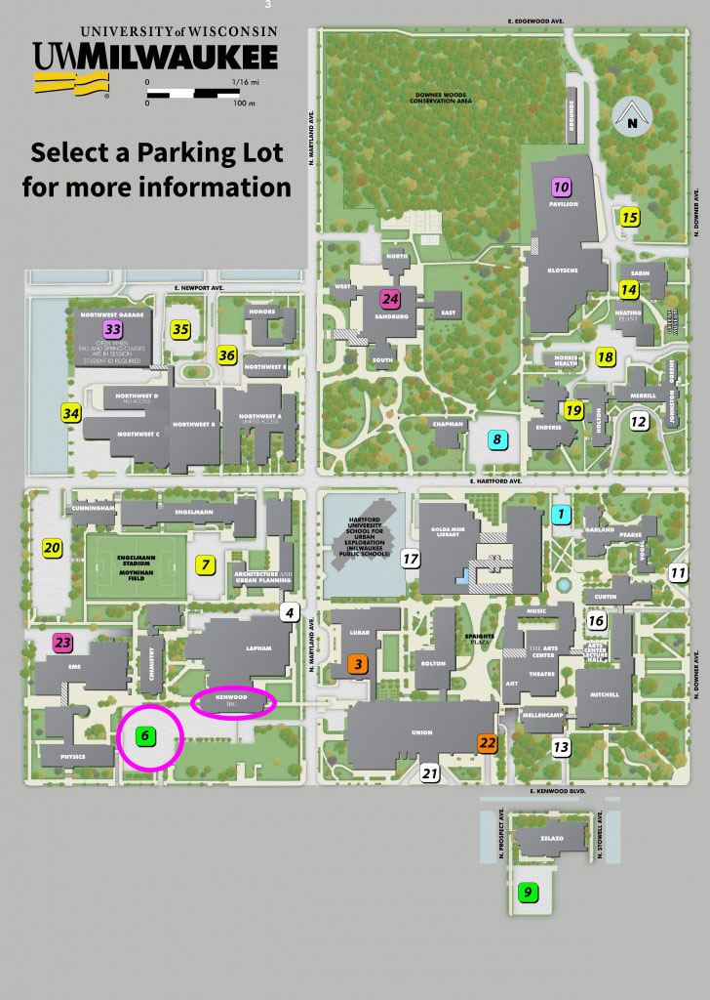

---
layout: content
title: CGCA - Visitors
description: Information for visitors
heading: Visitor Information
lead: Plan your visit to the Center for Gravitation, Cosmology and Astrophysics by reading about the campus, how to get here, and places to stay in Milwaukee. 
group: AboutUs
---    

<main role="main">
      <div class="container marketing">

        <!-- START THE FEATURETTES -->

        <div class="row featurette">
          <div class="col-md-7">
            <h2 class="featurette-heading">Location</h2>
            <p class="lead"><p>The Leonard E Parker Center for Gravitation,
        Cosmology and Astrophysics is on the fourth floor of the
        Kenwood Interdisciplinary Research Center (KIRC) at <a
        href="https://www.google.com/maps/place/Kenwood,+3135+N+Maryland+Ave,+Milwaukee,+WI+53211/@43.0755001,-87.8861338,771m/data=!3m2!1e3!4b1!4m2!3m1!1s0x880518cd79ed2fdb:0x70c06dfbfc293be2!6m1!1e1?hl=en">3135
        North Maryland Ave</a> (cirled in the map at the right).</p>

<h2>Getting to campus</h2>
<h3>By car: </h3>
<p class="tight"><i>Scenic Lake Route From All Directions:</i> From I-43 or I-94 near Downtown, take I-794 east to Lakefront exit. Proceed 3 miles north along the lake on Lincoln Memorial Dr. to the top of the hill, where Lincoln Memorial Dr. becomes E. Kenwood Blvd. and intersects with N. Lake Dr. Proceed straight (west) on Kenwood 6 blocks and park in Students' Union lot. KIRC is several blocks further west.</p>
<p><i>From the North:</i> Take I-43 south to the Capitol Dr. East exit. Proceed east on Capitol to N. Downer Ave., then south (right) on Downer five blocks to campus.</p>
<h3>Parking</h3>
<p class="tight"><a href="http://www4.uwm.edu/parking/">On-campus parking</a> is often scarce when classes are in session. Some curb parking in the neighborhood surrounding UWM is available, with restrictions. </p>

<p class="tight">Circled in pink in the map to the right is the lot right outside our building (Kenwood Interdisciplinary Research Center, KIRC). This is a pre-pay lot. You will see kiosks that will require cash or a debit/credit card to pay for total hours requested. The code for this lot (which posted) is 59006. This along with your license plate number and method of payment are all you need at the kiosk.</p>

<p class="tight">If this lot is full, you can then park in the sheltered lot at the Union. The Union is just east of our building on Kenwood Ave. Signs on Kenwood will direct you where to enter the parking garage. At the entrance, you will receive a parking stub. You then pay at the drive through exit booth upon leaving.</p>
<h3>Alternate Transportation Options:</h3>
<p class="tight">You can find information on alternate transportation
options at the <a
href="http://www4.uwm.edu/parking/trans_options/">Parking and Transit
web site</a>.  In particular, UWM is on the Green, Gold, Red, 21, 22,
30/30X,, 40U, 44U, 49U, and 60 lines of the 
<a href="http://www.ridemcts.com">Milwaukee County Transit
System</a>.  You can get route and schedule information via Google.


</p>

<h2>
        Preferred Lodging for Guests of the CGCA 
</h2>
<p class="tight">
UWM uses several hotels, with negotiated guest room rates. Guests of the CGCA who will receive reimbursement for lodging must stay at one of these hotels: your host <strong>must</strong> make the necessary arrangments in consultation with you. 
</p>

<p>For other visitors, the CGCA is easily accessible from the following hotels. 
</p>

<p>
<ul>
        <li>
                <a href="http://www.aloftmilwaukeedowntown.com">Aloft Milwaukee Downtown</a>
        </li>
        <li>
                <a href="http://www.countyclare-inn.com/">County Clare Inn</a>
        </li>
        <li>
                <a href="http://doubletree1.hilton.com/en_US/dt/hotel/MKECCDT-Doubletree-Hotel-Milwaukee-City-Center-Wisconsin/index.do">Doubletree Hotel Milwaukee City Center</a>
        </li>
        <li>
                <a href="http://www.ramadacitycentre.com/">Ramada City Center</a>
        </li>
        <li>
                <a href="http://www.knickerbockeronthelake.com/">Knickerbocker on the Lake</a>
        </li>
</ul>
</p>


<a name="links"></a>
<h2>
        Links
</h2>
<p>
<ul>
        <li> 
                <a href="http://www4.uwm.edu/map">Printable Campus Map</a></li>
        <li>
                <a href="http://www4.uwm.edu/trans/visitors.htm" >Interactive Campus Map</a></li>
        <li>
                <a href="http://www4.uwm.edu/cie/futurestudents/1003/" >International Student and Scholar Services</a></li>
        <li>
                <a href="http://www.tmj4.com/weather/" >Weather forecast</a></li>
</ul>
</p>
    </div>
          <div class="col-md-5">
            
          </div>
        </div>
     </div><!-- /.container -->
